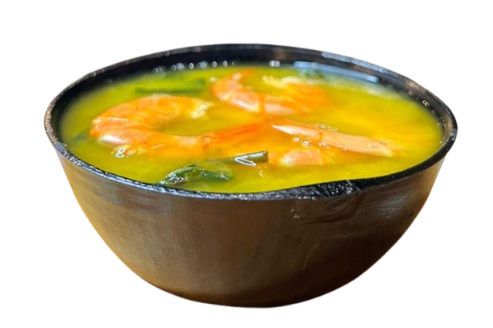
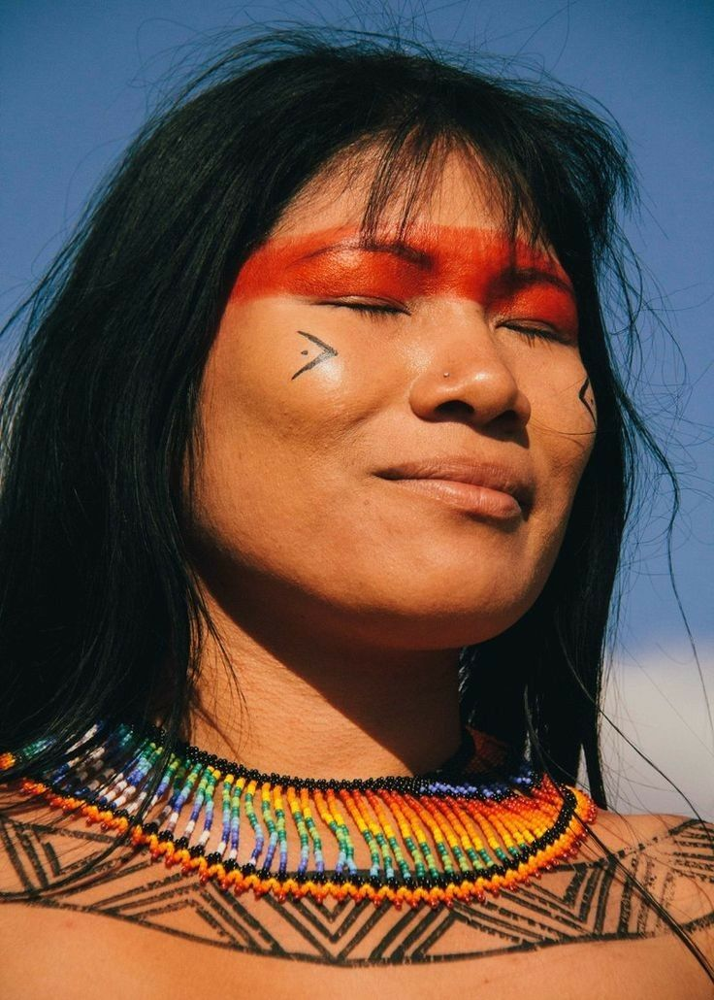

Receitas indígenas brasileiras
Descubra os sabores ancestrais da nossa terra.

Indígenas brasileiros
Os povos indígenas são formados pelos descendentes das populações originárias que já habitavam um território antes da chegada de colonizadores. Eles mantêm uma relação profunda com a terra, construída ao longo de muitas gerações, que faz parte de sua identidade cultural, social e espiritual.
Existem mais de
1.694.836
indígenas no país

Receitas
Descubra receitas tradicionais indígenas que carregam história, identidade e cultura em cada preparo, revelando sabores únicos que nasceram da conexão profunda entre os povos originários e a biodiversidade do Brasil.

Pirão
Creme feito com caldo de peixe e farinha de mandioca, muito comum na culinária brasileira.

Moquecas
Ensopado de peixe preparado com temperos e cozido lentamente.

Maniçoba
Prato feito com folhas de mandioca cozidas por dias e diferentes carnes.
Fale Conosco
Entre em contato conosco para tirar dúvidas, compartilhar conhecimentos ou saber mais sobre a riqueza da culinária indígena, contribuindo para a valorização e preservação dessas tradições tão importantes para nossa história.